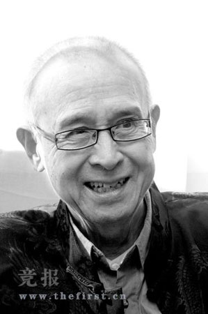
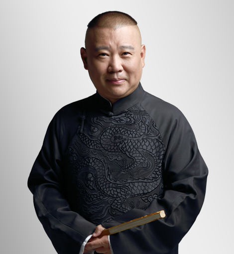

Chinese CrossTalk Assiociation
Deyunshe (Chinese: 德云社), formally Beijing Deyunshe Culture Communication Company Ltd., is a Chinese xiangsheng organization and folk art performance group based in Beijing, established by comedians Zhang Wenshun, Guo Degang and Li Jing in 1995. Originally known as the Beijing Conversation Conference, in 2003 it changed its name to Deyunshe. It is the key to "let the cross talk back to the theatre". On July 3, 2011, Deyunshe inaugurated a new form in the North Exhibition Theatre, by using the dialects dramas and comic dialogues to interpret the cross talks of various styles from the Qing dynasty to the Republic of China.
Xiangsheng (相声) (literally: 'face and voice'), also known as crosstalk, is a traditional performing art in Chinese comedy, and one of the most popular elements in Chinese culture. It is typically performed as a dialogue between two performers, or rarely as a monologue by a solo performer (similar to most forms of stand-up comedy in Western culture), or even less frequently, as a group act by multiple performers. The Xiangsheng language, rich in puns and allusions, is delivered in a rapid, bantering style, typically in the Beijing dialect (or in Mandarin Chinese with a strong northern accent). The acts would sometimes include singing, Chinese rapping, and musical instruments.
Zhang Wenshun (October 17, 1938-February 16, 2009), born in Beijing, Chinese comic actor.One of the founders of the 21st Century Revival of China Xiangsheng, one of the founders of Beijing Deyunshe. He followed Mr. Donggua to learn the funny drums. After retirement, he performed traditional cross talk with Guo Degang, and together with Guo Degang and Li Jing launched the Beijing Deyun Crosstalk Art Study Club, which was later renamed Beijing Deyun Club. Many of Deyun's early comic works benefited from his excavation and organization. Zhang Wenshun passed away in 2009 due to cancer.
Guo Degang 郭德纲 is a Chinese crosstalk comedian and actor.Guo began his acting studies by studying Pingshu from Gao Qinghai, crosstalk from Chang Baofeng and Hou Yaowen, and opera, including Peking opera, Ping opera, and Hebei Clapper opera.n 1996 Guo founded the crosstalk group "De Yun She" in Beijing, which subsequently collaborated with Zhang Wenshun and Yu Qian in 2000 and Yu Qian, Zhang Yongyong, Wang Shiyong, and Yang Jinming in 2002.